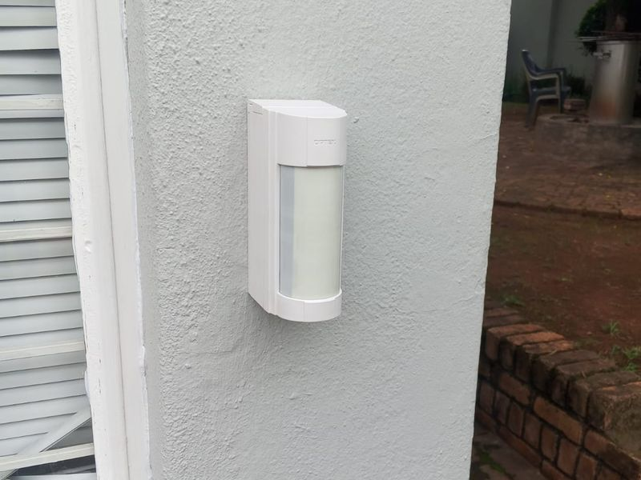
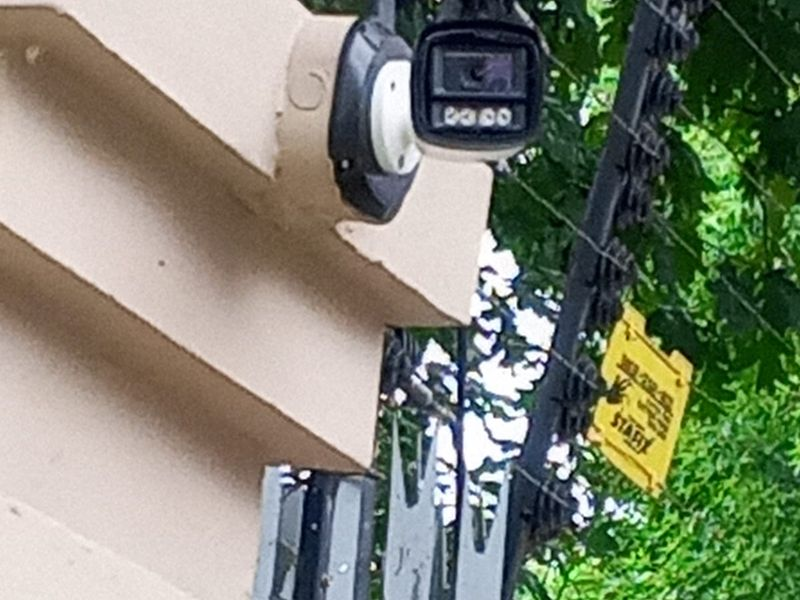
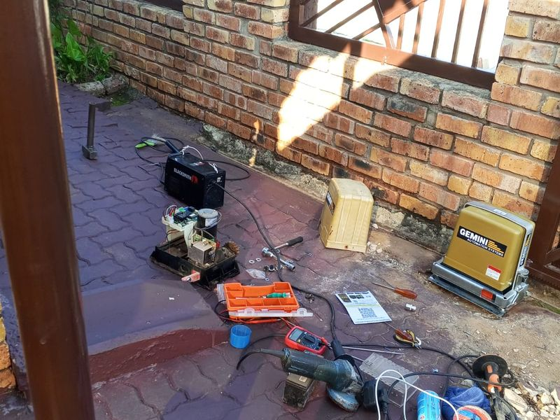
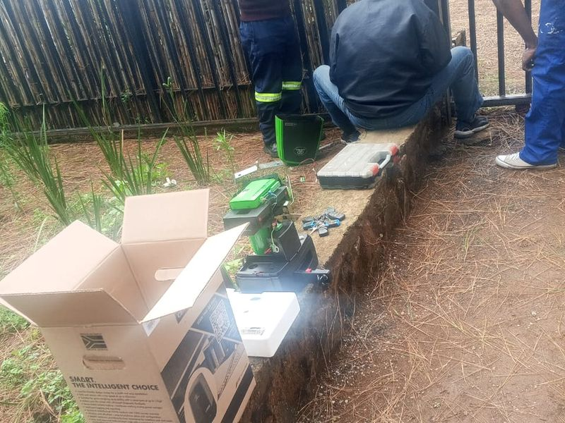
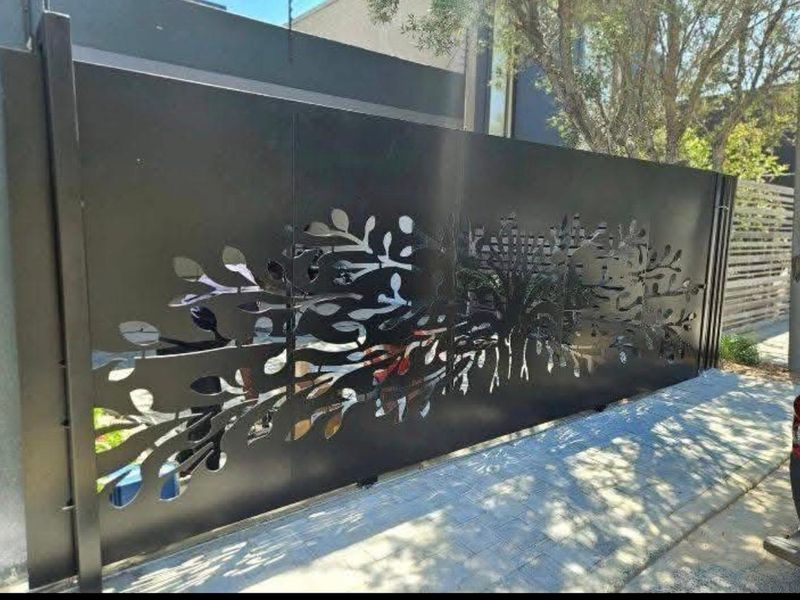

Our Services
Trusted help for every job around the home.
Browse the categories our vetted local professionals cover across Alberton and Gauteng. Don't see what you need? Message us and we'll find someone who can help.
8 Categories
Choose the help
you need.
Search or filter the eight categories, open a category for what it covers and what it costs, then request it on WhatsApp or send a full enquiry. Every request is handled personally while our app is being built.
Filter:
Showing all 8 categories
No category matches that search. Try a different word, or send us the job description and we will find the right professional.
Recent Work
Jobs completed
in our community.
A few of the security and handyman jobs our vetted professionals have finished for residents across Alberton.




